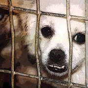
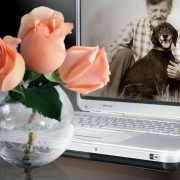
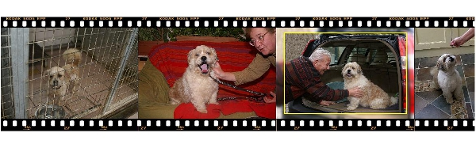
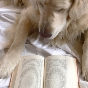

All our time is dedicated to rescue,
caretaking and rehoming of senior dogs whose guardians are debilitated due to illness or facility to continue to care for them.
Please join us, or contribute to make our efforts possible.
Sauvegarder leur traumatisme. Adopter un chien plus agé avant qui' il est trop tard.
Ils ne méritent pas de mourir derrière les barreaux. Vous ouvrez votre cœur une fois et en étes récompensé mille fois.
“The pleasure is not in what’s in the end of the road,
but in walking down that road” by Arthur Schoppenhauer

Le déploiement de Seniordogrescue-Belgique pour les chiens de personnes décédées ou malades est d'éviter que ces amis à quatre pattes soient abandonnés à leur sort,
êtres euthanasiés ou qu'ils doivent mourir derrière les barreaux. La tristesse des propriétaires malades devant quitter leur animal ne peut évidemment être supprimée,
mais savoir que de bons soins sont attribués et que l'animal est pris en charge est un réconfort.
La situation familiale des membres de la famille ne pouvant s'occuper d'un chien d'une personne décédée trouvent ici LA SOLUTION pour cet animal
Les chiens ne pleurent pas un maitre, ils se lamentent d'une situation qu'ils n'ont plus. Nous fournissons le panier en or qui correspond exactement à leurs besoins spécifiques
Si vous n'êtes pas en mesure d'adopter un chien, soutenez notre organisation en vous faisant membre. Nous avons donc plus de possibilités de réaliser nos actions.
Grâce à un don, même modeste, nous pouvons sauver des vies de nombreux chiens âgés et leur donner une deuxième vie.
Bruno E. Larmuseau
Président du Conseil d'administration
Seniordogrescue Belgique asbl
Qui sommes nous ?
"SAVING ONE DOG WON’T CHANGE THE WORLD, BUT SURELY ,
THE WORLD WILL CHANGE FOR THAT ONE DOG"
Après avoir agi pendant des années comme une initiative privée visant à promouvoir le sauvetage des chiens âgés il y eut un tournant:
arrêter ou poursuivre de façon structurée. Ceci dans l'espoir que la formule officielle pourra aider d'autres quadrupèdes malheureux à titre professionnel.
Ce qui fût une entreprise "d'un seul homme" a été élargie pour devenir une organisation qui agit dans cette problématique spécifique .
Pas seulement encore une association, mais une institution qui peut subvenir efficacement aux besoins spécifiques dans ce domaine.
Notre palmares de chiens qui ont été secourus et effectivement sauvés a déjà été important,
mais malheureusement c'est un problème qui ne s'arrête pas là et nécessite encore beaucoup de travail .
Notre groupe actuel est constitué d'un petit nombre de personnes qui ont une vie professionnelle mais qui consacrent du temps libre pour cette cause noble.
Nous avons aussi des retraités qui tout à fait désintéressés s’occupent des tâches spécifiques de la comptabilité, du secrétariat et de la traduction.
En outre, nous obtenons le soutien de spécialistes qui sont impliqués professionnellement dans le monde canin et qui offrent leurs services gratuitement ou à prix coûtant.
Je fais particulièrement allusion à une comportementaliste canin et un ostéopathe avec des doigts en or.
Je suis également heureux de pouvoir enfin remercier l'équipe de jeunes vétérinaires qui, dès le début ont pris en charge les soins.
Rien n’est jamais trop pour eux pour sauver les animaux souvent négligés et de les transformer en amis à quatre pattes prêts à être adoptés.
Nous pouvons compter sur eux 24 heurs sur 24. Leur équipement moderne d'imagerie médicale et de salle d'opération garantit les meilleurs soins.
En outre un grand merci à ceux qui assurent le logement temporaire. C'est d'autant plus dur,
d'aimer un chien et de le laisser aller dès que le chien a trouvé le propriétaire idéal pour la vie.
Les administrateurs de l'association ne sont pas rémunérés, leur satisfaction suffit.
Ils veulent une approche professionnelle à un problème spécifique:
le vieux chien devenu orphelin. Leur affinité avec Senior Dogs est leur moteur pour agir en tant que volontaires.
Par ailleurs, ils ne sont pas frustrés par les gens , comme malheureusement beaucoup de gens dans la protection animale, qui disent «plus je connais les gens,
plus j'aime les animaux. Ce qui est absurde.
Il ya des gens merveilleux dans le monde. Prenez seulement l'exemple de tous nos adoptants. Toutes les personnes avec un cœur au bon endroit.
Devenez l'un de nous, rendez-vous utiles pour une noble cause.
Mettez vos capacités à la disposition de notre association.
Et ceux qui ne ne sont pas dans la capacité de nous aider physiquement, aidez nous avec votre contribution, chaque euro est essentiel pour continuer notre travail correctement
Avec tous nos remerciements
TOUTE L'EQUIPE DE SENIORDOGRESCUE BELGIQUE

Qui sont ces chiens?
Tous ces chiens sont devenus orphelins par la disparition de leurs propriétaires, pour plusieurs raisons:
décès, maladie terminale, accident ou hospitalisation avec trop longue rééducation,
des situations dramatiques de la vie suite auxquelles le propriétaire est soudain dans l'impossibilité de prendre soin de son fidèle compagnon.
Nous sommes toute l'année sur la route et faisons environ 30.000 km pour sauver des chiens à la recherche d'un nouveau foyer et effectuer une première évaluation du chien Peut-t-il ou veut-il tourner la page ?.
"RELIABILITY" La fiabilité est primordiale pour nous. Dans certains cas, nous n’hésitons pas ,
pour avoir une «seconde opinion», à demander conseil auprès d'une comportementaliste professionnelle Inge Pauwels
( connu de ces ouvrages et son centre holistique ) et son équipe qui font une évaluation complète ( test M.A.G Agression and temperament Assesment)
du chien et effectue un rapport afin de voir chez qui ce chien sera placé de façon la plus appropriée
Nous avons aussi sauvé des chiens provenant de refuges traditionnels et qui, après check-up et intervention vétérinaire,
sont des chiens formidables et peuvent encore faire le bonheur de quelqu'un pendant plusieurs années.
Des chiens pour lesquels les refuges ne veulent pas faire de frais et pour lesquels des frais vétérinaires sont indispensables sont souvent euthanasiés.
Des chiens caractériels cependant, nous ne vous les proposons pas.
Nous ne demandons pas que nos adoptants soient des spécialistes canins .
Nous recherchons des gens qui adoptent un chien pour son âme et non pour son apparence et qui l’adoptent comme un membre à part entière de la famille,
et non seulement comme un accessoire..
Cela arrive malheureusement que des gens adoptent un chien dans un refuge traditionnel sans connaitre le comportement du chien et c'est le retour immédiatement.
C’est à nouveau une expérience traumatisante pour le chien. Très souvent, le chien n'est pas en cause , mais c'était tout simplement le mauvais choix.
Nous sommes toujours à la recherche du «couple harmonieux ".
Nous avons l’honnêteté de dire exactement comment fonctionne le chien. Faites de même et dites-nous exactement comment vous vivez.
Un chien dans la maison doit être une fête permanente. Nous avons des amours de chiens à offrir avec un grand souhait: "trouver le panier en or à vie".
Familles d'acceuil
Puisque nous sommes principalement impliqués avec des chiens de personnes décédées ou de personnes qui pour des raisons médicales ne peuvent plus assumer leur animal, une solution urgente est toujours nécessaire afin de sauver l'animal de l'injection mortelle ou du traumatisme des barreaux d'un refuge.
Par conséquent, il existe un besoin constant de familles pour l'accueil provisoire nécessaire. Nous sommes toujours à la recherche de nouvelles familles. Les familles existantes ne sont pas toujours disponibles pour cause de congés ou d'autres priorités.
Grâce à vous, les chiens peuvent être sauvés de l'euthanasie causée par l’indolence ou l'incapacité réelle des proches de prendre le chien dans la famille d'un propriétaire décédé.
Vous prenez soin de l'animal jusqu'à ce qu'un nouveau foyer pour lui soit trouvé. Votre expérience avec l'animal est très précieuse pour le choix du nouveau propriétaire. La vie dans un habitat normal nous donne beaucoup de renseignements sur les caractéristiques du chien (anxiété, désir de plaire, câlin ou pas, meilleur ami avec d'autres quadrupèdes, prédateur pour chats etc. ).
Nous convenons avec vous à l'avance quel animal peut être placé chez vous et pour quelle période. Une aide temporaire ne ne doit pas être synonyme de stress et de problèmes pour les chiens et la famille d'accueil elle-même. Tous les frais vétérinaires sont bien sûr pris en charge par l'association SDRB (fourni par le vétérinaire affilié à l'association).
Pour les produits alimentaires , ceci peut être décidé conjointement si ceux-ci sont pris en charge par la SDRB. Les chiens ont une faculté extraordinaire de s'adapter à de nouvelles situations. L'hébergement temporaire est parfois une différence entre la vie et la mort et le prélude nécessaire à l'ultime panier d'or. Demandez nous sans engagement toutes les informations si vous avez des doutes ou des questions spécifiques.

Soutien
SDRB exerce tout d'abord une politique financière totalement transparente. Nous avons volontairement choisi une application de comptabilité professionnelle , licence "elight" , les comptes sont entièrement compatibles avec les règles du droit Belge pour les sociétés à but non lucratif. Back-up sur le serveur externe du bureau de comptabilité et sous le contrôle de VSDC et inscrit sur la Banque-Carrefour des Entreprises avec bilan annuel dans le Moniteur belge.
Le sauvetage et le Rehoming des chiens séniors exige une approche très spécifique.
SDRB "place" des chiens mais ne "déplace" pas des chiens . Chaque chien mis à l' adoption subit un contrôlé vétérinaire sévère. Les préparer à l'adoption comporte : passeport européen , puce électronique, vaccinations pour la Belgique et l'étranger, ils sont vermifugés, déparasités . Si besoin les dents sont détartrées, échographie des reins et du foie. X-ray du cœur et des poumons. En cas de doute: test sanguin pour détecter toutes les maladies à la source. Si ce n'est pas déjà fait,ce qui est malheureusement souvent le cas, ils sont impérativement stérilisés ou castré . Ils sont donc protégés pour l'avenir de maladies graves. Plus de risques de tumeurs mammaires, utérus, prostate, etc. Ni métrite qui est la cause de beaucoup de déces de chiennes qui n'ont jamais été sterilisées.
Malheureusement, tout cela coûte beaucoup d'argent.
L'argent que nous ne pouvons pas entièrement récupérer auprès de l'adoptant. Ces personnes ont déjà ouvert leur cœur à un chien adulte ou agé, si nous leurs présentons également l'intégralité du coût, ce serait trop demander
C'est pourquoi nous vous demandons à vous ,qui avez aussi un coeur pour les animaux et qui voulez aider nos malheureux amis à quatre pattes de nous soutenir financierement et qu’ainsi, grâce à vous, nous puissions poursuivre notre action.
Vous pouvez le faire de plusieurs façons:
Vous faire membre de notre association.
Membre sympathisant: 40 € par an
N'attendez pas dans un premier temps un magazine trimestriel en couleur offset. Nos ressources sont limitées et sont principalement utilisées pour les animaux. Si vous avez une adresse e-mail vous recevrez un bulletin d'information sur notre organisation et serez informé des actions de sauvetages et des succès.
Un ordre permanent mensuel est évidemment la solution idéale. Aucun montant n'est trop petit. Chaque euro que nous recevons est accepté avec reconnaissance.
Un don unique spontané est bien entendu toujours le bienvenu. Il serait dommage que nous devrions laisser mourir un chien par manque de moyens financiers pour continuer notre travail.
Notre compte : 734-0228849-35, IBAN : BE57-7340 2288 4935 KREDBEBB
Lu pour vous

Sometimes laugther, sometiems tears. But always food for the soul.
Internet est une source incroyable d'informations et, nous nous en servons avidement pour affiner nos connaissances sur le comportement, la santé, la nutrition et tout ce qui concerne les chiens âgés pour encore mieux les comprendre et ainsi mieux les aider.
Par ailleurs, notre bibliothèque déborde de livres sur notre passion et, pourtant, nous recherchons encore le plus d’informations possibles utilisables sur papier.
Un livre est irremplaçable, c’est un autre rituel qui nous touche plus profondément et qui éveille plus nos émotions qu'un écran d’ordinateurs que nous regardons fixement.
Le livre « Dogs never lie about love » de Jef frey Moussaieff ( traduit en français : « un chien ne ment jamais en amour) Masson vous touche phrase après phrase avec toutes les connotations qui vous envahissent pendant que vous vous prélassez dans votre canapé avec un délicieux thé à la menthe frais et ce, de préférence avec votre chien sur vos genoux
Dans cette rubrique, nous sommes heureux de vous proposer des livres grâce auxquels nous avons beaucoup appris, qui nous ont profondément émus, ou qui nous ont donné un sentiment agréable et que nous pensons que vous les apprécierez également ou que vous serez heureux par leur intermédiaire d’apprendre quelque chose.
Contact
S'il vous plaît gardez à l'esprit que notre organisation est entièrement volontaire et que comme vous, nous avons une vie privée: les animaux, le travail, d'autres obligations, ... et, outre le fait de répondre téléphone, nous sommes aussi sur la route pour l'association
Nous avons mis notre cœur et âme dans notre initiative, mais comprenez que nous sommes pas toujours à même de répondre tout de suite à votre demande.
Laissez un court message indiquant clairement votre numéro de téléphone.
0032(0)475.82.75.16
Il est préférable d'opter pour l'e-mail, un moyen qui nous permet de répondre à tout moment